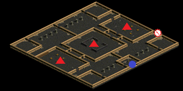
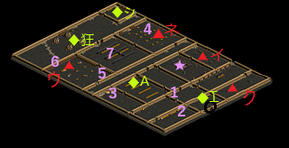

閉鎖された時空研究所
| 制限Lv | 651～680 |
|---|---|
| 秘密の入口 | モリネルタワー6F(126.59) |
| 報酬 | 経験値1000万+500万 200万G |
| ミニマップの表示条件 | マップ製作者Lv6 |
| フィールド属性低下 | 全属性抵抗-150％ |
| 罠 | 床罠なし 扉罠なし |
<マップ>
秘密の入口 モリネルタワー6F
|  | ● ！ |
… 移動ポータル … 秘密の入口 |
秘密ダンジョン 閉鎖された時空研究所
|  | ○ ★ ① ② ③ ④ ⑤ ⑥ ⑦ ◆エ ◆Ａ ◆狂 ◆シ ▲ク ▲イ ▲ネ ▲ウ |
… 初期位置 … 本棚(任意) … 本棚 … 机 … 机 … 机 … 本棚 … 本棚 … 本棚 … エルウィン … Aランク研究員 … 狂気の研究員 … 記憶喪失シェリー … 実験体クマ … 実験体イヌ … 実験体ネコ … 実験体ウシ |
<手順>
リーダーがエルウィンに話す。
入口の扉が開く。
シェリーの手がかり①～⑦の7個を集める。クリックするのはだれでも可。
①本棚(118.127)をクリック。
②机(121.147)をクリック。壁越しにクリックも可。
実験体クマ(Lv660)Zinを狩る。
汚染された研究員(Lv650)Zin12匹が出現。
実験室への扉が開く。
Aランク研究員に話す。選択肢(1)「はい」
Aランク研究員と研修員がMOB化、汚染された助手(Lv645)Zinと101区域研究員(Lv650)Zinが出現。
③机(75.131)をクリック。
★本棚(119.93)をクリック。時空スライム(Lv650)Zin4匹と時空ハンター(Lv660)Zinが出現。省略可。
実験体イヌ(Lv665)Zinを狩る。
実験室の上側の扉が開く。
④机(97.41)をクリック。
実験体ネコ(Lv670)Zinを狩る。
研究室への扉が開く。
⑦本棚(75.68)をクリック。壁越しにクリックも可。
⑤本棚(73.95)をクリック。壁越しにクリックも可。
⑥本棚(37.91)をクリック。
実験体ウシ(Lv680)Zinを狩る。
制御室への扉が開く。
リーダーが狂気の研究員に話す。
時空の追跡者(Lv670)Zin2匹、時空の巡察者(Lv670)Zin2匹、時空の主(Lv680)Zinが出現、狩る。
時空の主を倒すと、崩壊のカウント5分開始。経験値1000万
右上の小部屋の扉が開く。
扉をクリックすると時空スライム(Lv650)Zin4匹と時空ハンター(Lv660)Zin2匹が出現。
時空ハンターは隔離しておく。
リーダーが記憶喪失シェリーに話す。
時空の旅人(Lv660)Zinが出現、狩る。
時空の侵略者(Lv670)Zinが出現。
時空リーチ(Lv660)Zin19匹と時空の破壊者(Lv680)Zinが出現。
時空リーチを狩る。
時空の破壊者を狩る。ボーナス報酬 経験値500万
隔離しておいた時空ハンターを狩る。
<補足>
★本棚は省略可。
手がかり①～⑦の7個はクリックし忘れがあると、時空の主を倒した時点で秘密終了。崩壊のカウント30秒。
時空の主を倒すと崩壊のカウント5分が開始されるので、秘密内に再入場できなくなる。
時空の主と時空の破壊者を倒した時に死亡していると、経験値が貰えないので注意。
大幅なフィールド属性低下があり、エレメだけでは補い切れないため各自が抵抗装備を用意すること。
最低限必要な魔法抵抗は火闇。水風もあると可。
ミニペットのスキルによりフィールド属性低下の軽減、魔法抵抗の上昇が可能。
魔法攻撃無効のMOBがいるため、物理火力が必要。
魔法攻撃無効のMOBは、汚染された助手、狂気の助手、汚染された事務員。
弱化装備・低下も無効。物理攻撃のみ可。
魔法抵抗が非常に高いMOBも多く、知識職は弱化装備が必要。
魔法抵抗の高いMOB
| MOB | 魔法抵抗(％) | |||||
|---|---|---|---|---|---|---|
| 火 | 水 | 風 | 土 | 光 | 闇 | |
| 実験体クマ | 212 | 157 | 212 | 152 | 147 | 187 |
| 汚染された研究員 | 153 | 104 | 155 | 99 | 94 | 120 |
| 時空スライム | 69 | 132 | 84 | 84 | 56 | 79 |
| 時空ハンター | 158 | 120 | 115 | 115 | 135 | 160 |
| 実験体イヌ | 120 | 71 | 66 | 66 | 61 | 86 |
| 実験体ネコ | 123 | 120 | 115 | 155 | 110 | 110 |
| 実験体ウシ | 100 | 97 | 92 | 128 | 87 | 87 |
| 時空の追跡者 | 100 | 85 | 45 | 126 | 45 | 65 |
| 時空の巡察者 | 110 | 94 | 54 | 130 | 52 | 74 |
| 時空の主 | 143 | 105 | 77 | 151 | 85 | 141 |
| 時空の旅人 | 101 | 69 | 62 | 63 | 61 | 76 |
| 時空の破壊者 | 184 | 124 | 144 | 144 | 139 | 164 |
| 時空のかけら | 121 | 118 | 40 | 55 | 146 | 131 |
| 暴走警備ゴーレム | 127 | 98 | 124 | 124 | 93 | 93 |
| デジーズ | 38 | 45 | 116 | 31 | 26 | 26 |
一般的なPT構成
BIS WIZ 低下ネクロ 範囲火力 物理火力
各職の装備・立ち回り
| 職 | 注意事項 |
|---|---|
| BIS | スキル重視。回復に専念。ミラー死に注意。 |
| WIZ | アスヒ用に速度とHP装備。アスヒに専念、余裕があればサンダー。釣り過ぎ死亡に注意。 |
| ネクロ | HP・魔法抵抗を完備。 |
| 知識火力 | 釣り過ぎ死亡に注意。 |
| 物理火力 | 魔法攻撃無効のMOBを優先して倒す。 |
ラスボス戦の攻略
扉をクリックすると出現する時空ハンターは、火力に余裕があればそのまま殲滅でも可。
余裕がなれけば隔離しておき、最後に時間があれば倒す。
時空の侵略者を釣らずにそのまま倒すと、時空リーチと時空の破壊者のデビルスピードが大量発動。
範囲火力が時空リーチを瞬殺できる余裕があれば、そのまま殲滅でも可。
余裕がなければ時空の侵略者、時空リーチを釣ってから倒す。
時空の侵略者と時空の破壊者のデビルスピードは混乱、天使のディスペで防げる。
フレイムストームは混乱、記憶の指輪『トラップ』の檻で防げる。
混乱がかかるとフレイムストームは右方向に発射される。
| MOB | 使用スキル | 詳細 |
|---|---|---|
| 実験体クマ (幻影Zin) |
レンジヒール | HP回復 |
| フリーリジェネレーション | HP回復 | |
| スクリームフィアー | 物理ダメ スタン | |
| スリーピーホール | 物理ダメ 睡眠 | |
| 汚染された研究員 (バンシーZin) |
ヒーリング | HP回復 |
| フリーリジェネレーション | HP回復 | |
| スクリームフィアー | 物理ダメ スタン | |
| スリーピーホール | 物理ダメ 睡眠 | |
| 汚染された助手 (ジャイアントZin) |
キックアタック | 物理ダメ |
| マウルリングアタック | 物理ダメ スタン 致命打 | |
| 101区域研究員 汚染された技術者 (死の斧Zin) |
エクスアタック | 物理ダメ |
| ピアスインパクト | 物理+火ダメ | |
| ブラッドベルセルク | 攻撃力上昇 | |
| 時空スライム (水晶烏賊Zin) |
フリーリジェネレーション | HP回復 |
| アイスボルト | 水ダメ コールド | |
| ブライトフラッシュ | 光ダメ | |
| インクスプレー | 闇ダメ | |
| 時空ハンター (ダークファイアZin) |
ミラーカーズ | 反射闇ダメ |
| スペクトラルフィスト | 物理+火+水+風+毒ダメ フリーズ | |
| デッドリーナイトメア | 闇ダメ 睡眠 | |
| スポイルドウォーター | 水+闇ダメ フリーズ | |
| 実験体イヌ (地獄の斧Zin) |
エクスアタック | 物理ダメ |
| ピアスインパクト | 物理+火ダメ | |
| インスタントキリング | 物理ダメ 致命打 決定打 | |
| ブラッドベルセルク | 攻撃力上昇 | |
| 実験体ネコ (アライブコープスZin) |
ポイズナスクロー | 物理+毒ダメ |
| スリーピーホール | 物理ダメ 睡眠 | |
| スタンアタック | 物理ダメ スタン | |
| ライフドレイン | 物理ダメ HP吸収 | |
| 実験体ウシ (デスピンサーZin) |
フリーリジェネレーション | HP回復 |
| ディスチャージアタック | CP減少 | |
| デスタッチ | 物理+闇ダメ 致命打 | |
| デッドリーナイトメア | 闇ダメ 睡眠 | |
| 時空の追跡者 (魔女2 Zin) |
ソードアタック | 物理ダメ |
| ブラッドエキスパンド | 攻撃力低下 防御力上昇 HP回復 | |
| 悪口 | 全属性抵抗低下 | |
| ライフドレイン | 物理ダメ HP吸収 | |
| 時空の巡察者 (魔女3 Zin) |
ディスチャージアタック | CP減少 |
| シールドピアシング | 物理ダメ | |
| 逆鱗 | 闇ダメ | |
| 時空の主 (サキュバス3 Zin) |
ポイズンガス | 範囲毒ダメ |
| シールドピアシング | 物理ダメ | |
| クリスタルフラッシュ | 範囲水+光ダメ コールド | |
| ヘルプリズン | 移動不能 | |
| 時空の旅人 (デビルEx) |
ファイアースキン | 持続火ダメ |
| フレイムストーム | 火+風ダメ | |
| 時空の侵略者 (デーモンZin) |
ファイアーボルト | 火ダメ |
| ファイアースキン | 持続火ダメ | |
| フレイムストーム | 火+風ダメ | |
| デビルスピード | 移動・攻撃速度上昇 | |
| 時空リーチ (クリーパーZin) |
ディスチャージアタック | CP減少 |
| 体当たり | 物理ダメ ノックバック | |
| ワームバイト | 闇ダメ 移動不能 | |
| 時空の破壊者 (サタンZin) |
ファイアースキン | 持続火ダメ |
| フレイムストーム | 火+風ダメ | |
| デビルスピード | 移動・攻撃速度上昇 | |
| 悪口 | 全属性抵抗低下 | |
| 時空のかけら (ウィークネス天使2 Zin) |
ウィンディクラップ | 物理+風ダメ |
| ディップソング | ダメ反射 | |
| トワーリングプロテクター | 風ダメ スタン | |
| ブレストファイア | 火ダメ | |
| 悪口 | 全属性抵抗低下 | |
| 狂気の助手 (降神術師Zin) |
スタンアタック | 物理ダメ スタン |
| ウィップアタック | 物理ダメ スタン | |
| 悪態 | 攻撃・防御力・攻撃・移動速度低下 | |
| ワームバイト | 闇ダメ 移動不能 | |
| 狂気の研究員 (ジャンキーZin) |
フリーリジェネレーション | HP回復 |
| ポイズナスクロー | 物理+毒ダメ | |
| スリーピーホール | 物理ダメ 睡眠 | |
| ブラッドベルセルク | 攻撃力上昇 | |
| 狂気の技術者 (スプクZin) |
フリーリジェネレーション | HP回復 |
| ポイズナスクロー | 物理+毒ダメ | |
| ディスチャージアタック | CP減少 | |
| 汚染された事務員 (スナイパーZin) |
スタートリングライナー | 物理ダメ |
| ピアシングアロー | 物理ダメ | |
| スナイプ | 物理ダメ 致命打率100％ | |
| 汚染された巡察犬 (エルフの猟犬Zin) |
バイトハンギング | 物理ダメ 移動速度・回避率低下 噛み付き |
| インフェルノバイト | 物理+火ダメ | |
| フレームリング | 持続火ダメ | |
| 汚染警備ゴーレム (守護鎧Zin) |
ソードアタック | 物理ダメ |
| スタンアタック | 物理ダメ スタン | |
| ブラインドアタック | 物理ダメ 暗闇 | |
| ディメンジョンアーマー | 異常・低下・呪い・全属性抵抗・防御力上昇 | |
| 暴走警備ゴーレム (メタルゴーレムZin) |
フリーリジェネレーション | HP回復 |
| アイアンブレード | 物理+土ダメ | |
| ダークウェポン | 闇ダメ付加 | |
| ワームバイト | 闇ダメ 移動不能 | |
| デジーズ (イナゴの群れZin) |
共鳴 | 攻撃力上昇 |
| メルティングウェポン | 攻撃力低下 | |
| スパイダースティング | 物理+毒ダメ スタン | |
| スウォムラッシュ | 物理+毒ダメ |
秘密ダンジョン補足
- 通称「モリ6秘密」-参考動画(2012年撮影)
- 当時と比較して、装備や環境が異なりそうなので進め方の参考として。